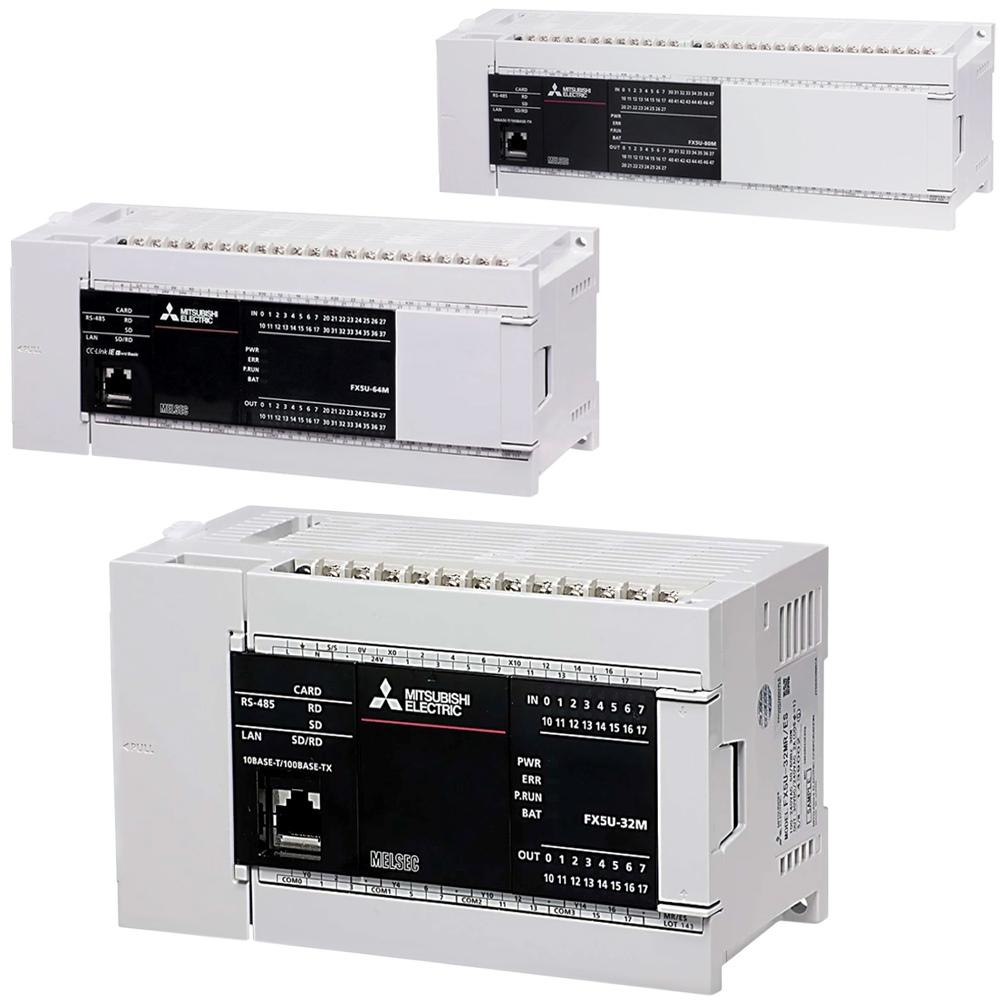
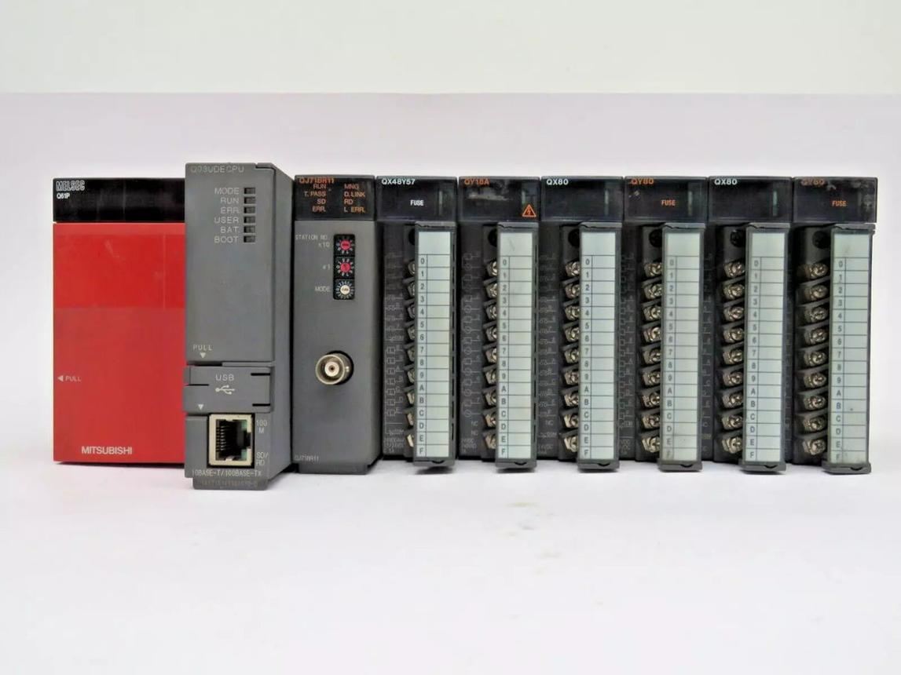
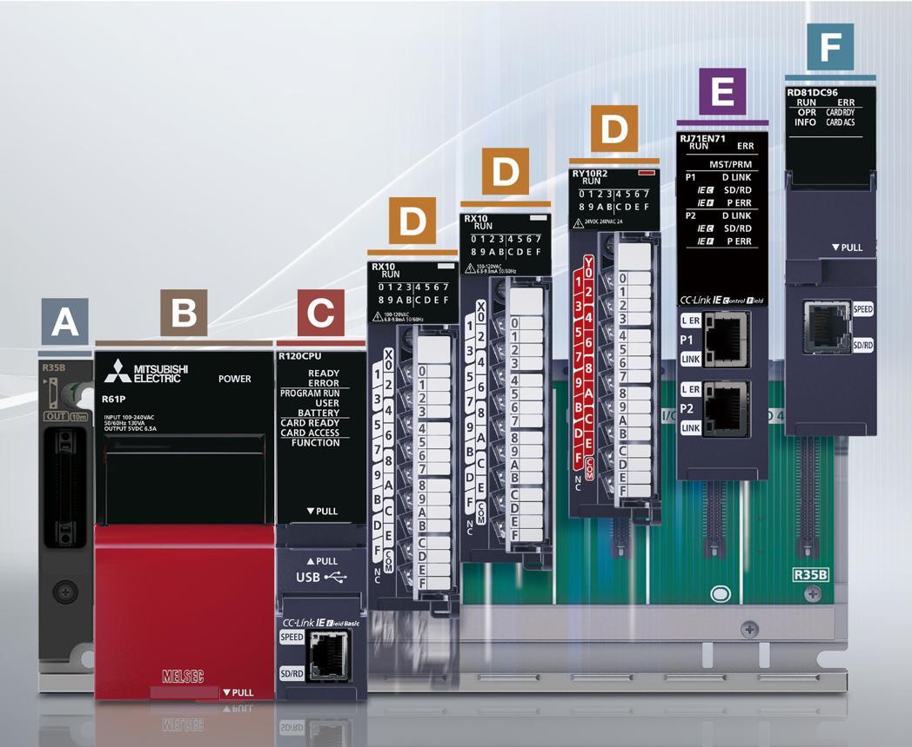

1. Definition and Purpose
Mitsubishi Electric is a major industrial automation manufacturer whose products include PLCs, HMIs, servo systems, variable-frequency drives, industrial robots, motion controllers, and industrial communication equipment.
Mitsubishi PLCs are used in machine automation, automotive production, assembly lines, packaging equipment, material handling, and manufacturing processes.
The main PLC families covered in this topic are:
- FX series: Compact PLCs used mainly for standalone machines and smaller automation systems.
- Q series: Modular PLCs used in established machine and production-line automation systems.
- iQ-R series: A newer modular PLC platform designed for advanced machine and plant automation.
- GX Developer: Legacy programming software associated with many older Mitsubishi PLC installations.
- GX Works2: Engineering software supporting selected Mitsubishi PLC families, including FX and Q models.
- GX Works3: Engineering software for supported newer platforms, including iQ-R and selected FX5 controllers.
The key is to identify the exact CPU model before selecting the engineering software. Mitsubishi's PLC generations differ in hardware architecture, instruction support, communication options, and project compatibility.
2. Mitsubishi Automation Ecosystem
| Term | Meaning | Main purpose |
|---|---|---|
| Mitsubishi Electric | Automation equipment manufacturer | PLCs, drives, robots, HMIs and related systems |
| MELSEC | Mitsubishi PLC product family | Industrial control |
| FX series | Compact PLC family | Standalone and small machine control |
| Q series | Modular PLC family | Established machine and line automation |
| iQ-R series | Advanced modular PLC family | High-performance and complex automation |
| GX Developer | Legacy PLC programming software | Supported older Mitsubishi PLCs |
| GX Works2 | PLC engineering software | Supported FX and Q PLC models |
| GX Works3 | Newer engineering software | Supported iQ-R and selected FX5 systems |
| GOT | Mitsubishi operator-interface product family | HMI monitoring and operation |
| CC-Link | Industrial network technology family | Communication between supported controllers and devices |
| CC-Link IE | Industrial Ethernet-based network technology family | High-speed industrial communication on supported systems |
| MELSOFT | Mitsubishi engineering software brand | PLC, HMI, motion and other engineering tools |
Not every software version supports every CPU. Always verify the CPU model, firmware, software edition, and project version.
3. FX Series: Compact PLCs

The FX series is designed primarily for compact machine control. Different generations have different hardware capabilities and programming environments.
Common generations include:
- FX1S and FX1N.
- FX2N and FX2NC.
- FX3U and related FX3 models.
- FX5U and other supported FX5 models.
These are not identical products. Their available I/O, expansion capabilities, memory, communication interfaces, and instruction sets vary.
Typical applications
- Conveyor control.
- Pneumatic fixtures.
- Small assembly machines.
- Packaging machines.
- Pump and motor control.
- Simple pick-and-place equipment.
- Standalone inspection stations.
Main characteristics
- Compact CPU design.
- Integrated digital I/O on many models.
- Expansion modules for additional I/O or communication where supported.
- Ladder-based programming is common.
- Serial and Ethernet communication capabilities vary by model.
- Legacy FX generations commonly use GX Developer or GX Works2, while supported FX5 systems use GX Works3.
Example
A compact PLC controls a pneumatic fixture with two sensors and a solenoid valve.
Part_Present
|
v
Check_Start_Request
|
v
Check_Safety_Conditions
|
v
Energize_Valve
|
v
Confirm_Extended_Position
This is a conceptual sequence, not a complete safety or machine-control program.
Maintenance considerations
When diagnosing an FX system, identify the exact model and check:
- CPU RUN/STOP and error indicators.
- Input and output status.
- Expansion-module status.
- Program execution and interlock conditions.
- Communication settings and connected devices.
- Software compatibility before uploading, downloading, or editing.
Do not assume that an FX3U project can be transferred directly to an FX5U without conversion and verification.
4. Q Series: Modular PLCs

The Q series is a modular PLC family used in established industrial automation installations.
Typical applications include:
- Automotive assembly lines.
- Conveyor and transfer systems.
- Machine-tool interfaces.
- Multiple-station production equipment.
- Distributed I/O control.
- Complex sequencing and interlocking.
- Process and utility control.
Main characteristics
- Modular rack-based hardware.
- CPU, power supply, I/O, and communication modules selected for the application.
- Support for a broad range of industrial configurations, depending on the CPU and installed modules.
- Commonly programmed using GX Developer or GX Works2, depending on the model and project.
- Supports applicable Mitsubishi communication networks and supported third-party interfaces.
- Can be integrated with HMIs, drives, and remote I/O.
Hardware architecture
Mitsubishi Q Series PLC
|
+----------+----------+
| | |
Power CPU I/O modules
|
+----------+----------+
| |
Sensors Actuators
|
Communication modules
|
HMI / Drives / Remote I/O
The actual rack and communication arrangement depends on the installed system.
Maintenance considerations
- Confirm the CPU model and module arrangement.
- Check CPU status and error indicators.
- Inspect module status and hardware configuration.
- Verify the network and communication settings.
- Review the program's execution path and device states.
- Compare the project with the actual controller before making changes.
A Q-series CPU fault and an individual I/O module fault are different conditions. Use the available diagnostics to identify which component is reporting the problem.
5. iQ-R Series: Advanced Modular PLCs

The iQ-R series is a modern Mitsubishi PLC platform designed for high-performance and complex automation applications.
Typical applications include:
- Automotive production lines.
- High-speed assembly machines.
- Large coordinated manufacturing systems.
- Advanced motion-control applications.
- Distributed I/O systems.
- Complex equipment requiring extensive diagnostics and communication.
- Applications integrating PLC control, safety, motion, and information systems through supported hardware.
Main characteristics
- Modular rack-based architecture.
- CPU and modules selected according to application requirements.
- Engineering primarily through GX Works3.
- Advanced diagnostics and programming capabilities.
- Integration with supported industrial networks and distributed I/O.
- Support for advanced control and motion functions on appropriate CPU and module variants.
Maintenance considerations
Before working on an iQ-R controller, identify:
- CPU model and firmware.
- GX Works3 version and project revision.
- Rack, power supply, and installed modules.
- Communication interfaces and network configuration.
- CPU diagnostics and module error information.
- Whether the system contains safety-related or motion-control functions.
The iQ-R is a newer platform than the traditional Q series, but that does not mean every Q-series application can be migrated without redesign. Instructions, hardware, communications, and application behavior must be checked.
6. GX Developer, GX Works2 and GX Works3
Mitsubishi has several generations of PLC engineering software. Selecting the correct one is essential because software compatibility depends on the PLC model and project generation.
6.1 GX Developer
GX Developer is a legacy programming environment used with supported older Mitsubishi PLCs.
Its main functions include:
- Creating and editing PLC programs.
- Programming in supported ladder and instruction-list formats.
- Configuring supported PLC hardware.
- Monitoring device states.
- Uploading and downloading supported program information.
- Diagnosing controller errors.
It is commonly encountered when maintaining older FX, A-series, and Q-series installations, depending on the exact CPU.
6.2 GX Works2
GX Works2 is an engineering environment for supported Mitsubishi PLC families, including many FX and Q-series models.
Typical functions include:
- PLC program development.
- Hardware and parameter configuration.
- Device and label management.
- Online monitoring.
- Program verification and comparison features.
- PLC diagnostics.
- Upload and download operations.
- Reusable program organization and documentation.
GX Works2 is frequently relevant to existing factory equipment using FX3 or Q-series controllers.
6.3 GX Works3
GX Works3 is the newer engineering environment for supported Mitsubishi PLC platforms, including the iQ-R family and selected FX5 models.
Typical functions include:
- PLC hardware and parameter configuration.
- Program development.
- Device labels and structured data.
- Online monitoring and diagnostics.
- Project verification.
- Supported motion and network configuration.
- Reusable engineering components.
- Integration with other supported Mitsubishi engineering tools.
Software comparison
| Feature | GX Developer | GX Works2 | GX Works3 |
|---|---|---|---|
| Software generation | Legacy | Intermediate generation | Newer generation |
| Common PLC families | Supported older PLCs | Many FX and Q models | iQ-R and selected FX5 models |
| Program editing | Supported legacy languages | Supported ladder and other languages | Supported ladder and structured programming languages |
| Hardware configuration | Model-dependent | Model-dependent | Model-dependent |
| Online monitoring | Supported | Supported | Supported |
| Project migration | Legacy project handling | Supports selected legacy migration workflows | Supports selected migration workflows |
| Key consideration | Legacy compatibility | Exact CPU support | Exact CPU and firmware support |
These software environments are not universally interchangeable. A project may need conversion, and some legacy hardware may require its original compatible engineering software.
7. Mitsubishi PLC Program Structure
Mitsubishi PLC programming often uses a combination of device-based addressing, labels, program sections, and supported function blocks.
The exact architecture depends on the PLC family, CPU, software generation, and programming language.
7.1 Devices
Traditional Mitsubishi programs use device identifiers to refer to inputs, outputs, internal relays, timers, counters, and data registers.
| Device | General purpose |
|---|---|
X |
Digital input |
Y |
Digital output |
M |
Internal relay or bit |
L |
Latch relay on supported platforms |
D |
Data register |
T |
Timer device |
C |
Counter device |
W |
Link register on supported platforms |
R |
File register on supported platforms |
The available device ranges and exact behavior vary by PLC family and configuration.
Example
X0 = Start pushbutton input
X1 = Stop condition input
M10 = Internal run request
Y0 = Motor output command
D100 = Production count or parameter
These are illustrative assignments, not universal addresses.
7.2 Labels
Labels assign meaningful names to variables, making programs easier to read and maintain.
Examples:
Start_Request
Stop_Request
Motor_Run_Command
Motor_Running_Feedback
Drive_Ready
Interlocks_OK
Fault_Active
The names are descriptive labels, not physical addresses. Their mapping and scope depend on the project configuration.
7.3 Function blocks and reusable logic
Supported Mitsubishi platforms provide function blocks and structured programming features that can package repeated logic.
Examples include:
- Motor control.
- Alarm processing.
- Conveyor-zone logic.
- Analog scaling.
- Robot handshake processing.
- Production counting.
Reusable logic reduces duplication and improves consistency. However, the engineer must still understand the block's parameters, internal behavior, execution order, and platform limitations.
8. Mitsubishi Ladder Logic
Ladder logic represents control conditions and outputs using graphical contacts, coils, and instructions.
A simplified motor-command example:
Start_Request ---- Auto_Mode ---- Drive_Ready ---- Interlocks_OK
|
v
Motor_Run_Command
This is a conceptual representation. Actual ladder logic must include the required stop behavior, fault handling, restart policy, and applicable safety functions.
Common instruction categories
| Category | Purpose |
|---|---|
| Contacts and coils | Evaluate conditions and control Boolean states |
| Set and reset | Establish or clear retained Boolean states where supported |
| Timers | Implement time-dependent behavior |
| Counters | Count events |
| Compare instructions | Compare values |
| Arithmetic | Perform calculations |
| Data transfer | Move or convert values |
| Shift and bit operations | Process bit patterns |
| Function blocks | Implement reusable control functions |
Instruction names and behavior differ across Mitsubishi generations. Confirm the instruction reference for the target CPU.
Important distinction: device versus instruction
A device is a storage location or signal reference, such as X0, M10, or D100.
An instruction describes an operation performed by the PLC program, such as comparing two values, moving data, or timing a condition.
Understanding both is necessary to interpret a ladder diagram correctly.
9. Mitsubishi Hardware and I/O Architecture
A PLC system links the controller program to physical field devices.
HMI / SCADA
|
Industrial Network
|
+-------------+
| Mitsubishi |
| PLC CPU |
+-------------+
| |
Local I/O Network Modules
| |
Sensors/Valves Remote I/O
|
Sensors/Actuators
Main components
- CPU: Executes the control program.
- Power supply: Supplies power to the applicable PLC hardware.
- Digital input modules: Read binary signals from sensors and switches.
- Digital output modules: Control supported field devices through appropriate interface circuits.
- Analog input modules: Read analog signals such as pressure, temperature, or speed feedback.
- Analog output modules: Provide supported analog references to devices.
- Communication modules: Connect the PLC to supported industrial networks.
- Remote I/O: Places I/O near the equipment it serves.
- HMI: Provides operator information and permitted controls.
Maintenance sequence for an I/O fault
- Identify the exact input or output address.
- Check the physical sensor, actuator, and field wiring.
- Inspect the module's LEDs and diagnostic status.
- Confirm the actual electrical signal using approved measurement procedures.
- Monitor the corresponding PLC device or label.
- Trace the program logic that reads or writes the signal.
- Check whether the output is inhibited by interlocks, faults, or operating modes.
- Verify the result after the approved correction.
A PLC output indicator being ON does not necessarily prove that the actuator receives the correct voltage or that the actuator itself works.
10. Mitsubishi Industrial Communication
Mitsubishi automation systems can use several communication technologies. The exact options depend on the controller, modules, and connected devices.
CC-Link
CC-Link is a family of industrial communication technologies used to connect supported controllers, remote I/O, and field devices.
When troubleshooting an existing CC-Link installation, check:
- Network status indicators.
- Station numbers and network parameters.
- Cable and connector condition.
- Network termination and topology as applicable.
- Communication errors and station availability.
- Consistency between the project configuration and actual devices.
CC-Link IE
CC-Link IE includes industrial Ethernet-based network technologies for supported high-speed communication and automation applications.
It is not simply another name for every Ethernet connection on a Mitsubishi PLC. Confirm the exact network variant, hardware, and configuration.
Ethernet and serial communication
Depending on the PLC and installed interfaces, Mitsubishi systems may communicate using Ethernet, serial communication, Modbus variants, SLMP, or other supported protocols.
Do not assume that every FX, Q, or iQ-R CPU supports all these options natively.
Communication troubleshooting
| Symptom | First checks |
|---|---|
| PLC cannot be found | Interface selection, IP settings, cable, switch and CPU state |
| Remote I/O unavailable | Network status, station configuration and module diagnostics |
| HMI data is stale | HMI connection, address mapping, communication errors and PLC data |
| Drive command missing | PLC command, network connection, drive state and permissives |
| Intermittent communication | Physical connections, network errors, configuration and load |
| Wrong data displayed | Address mapping, data type, scaling and byte/word interpretation |
11. Online and Offline Operations
The same basic engineering principles apply across Mitsubishi software generations, although menu names and exact capabilities differ.
- Offline project: The engineering project stored on the computer.
- Online PLC: The actual controller connected to the engineering computer.
- Upload: Retrieves supported information from the PLC.
- Download: Transfers supported project information to the PLC.
- Monitor: Displays live device states or program execution information.
- Compare or verify: Checks supported differences between project versions or controller contents.
- PLC diagnostics: Displays available CPU, module, and communication error information.
Before downloading
- Confirm the exact PLC model.
- Confirm the engineering software and supported version.
- Verify the communication path.
- Back up the existing project and available parameters.
- Compare the offline project with the online controller where supported.
- Check whether the download will interrupt machine operation.
- Obtain the required authorization.
- Verify the machine behavior after the change.
Important: Uploading a program does not always recreate a complete native project with all comments, labels, libraries, parameters, and documentation. Preserve the original project and related engineering files.
12. Common Mitsubishi PLC Problems
| Problem | Possible causes | First checks |
|---|---|---|
| CPU error | Program error, hardware issue, configuration fault or other CPU-specific condition | CPU status and diagnostic information |
| Cannot connect online | Wrong interface, incorrect communication parameters, cable or network problem | Engineering connection settings |
| Input not changing | Sensor fault, wiring problem, incorrect address or missing field signal | Physical signal and PLC input status |
| Output not energizing | Interlock false, logic condition not satisfied, output fault or field wiring problem | Program monitoring and output module |
| Remote I/O fault | Network configuration, station issue, wiring or module fault | Network diagnostics and module status |
| Program download fails | Software/CPU incompatibility, access restrictions or configuration errors | CPU model, software version and error messages |
| Project will not open | Unsupported software version or project format | Identify original software and PLC generation |
| HMI shows incorrect value | Incorrect device address, data type, scaling or communication issue | Compare the HMI tag with the PLC value |
| Machine sequence stalls | Missing sensor confirmation, timer condition, interlock or state-transition issue | Trace the active sequence and its permissives |
| Migration introduces errors | Unsupported instructions, device differences or hardware changes | Migration report, compile errors and functional testing |
13. Practical Example: Conveyor Not Starting
Consider a conveyor controlled by a Mitsubishi PLC.
Possible variables include:
Start_Request
Auto_Mode
Drive_Ready
Guard_Closed
Part_Transfer_Clear
Fault_Active
Conveyor_Run_Command
Conveyor_Running_FB
A simplified permissive model is:
Conveyor_Run_Command =
Start_Request
AND Auto_Mode
AND Drive_Ready
AND Guard_Closed
AND Part_Transfer_Clear
AND NOT Fault_Active
This is an illustrative control model. Actual machine and safety logic must follow the approved design.
Troubleshooting procedure
- Check whether the start request reaches the PLC.
- Verify that the machine is in the required operating mode.
- Check the drive-ready signal and drive diagnostics.
- Verify the required guard and process permissives through the approved safety and control interfaces.
- Identify which condition prevents the permissive from becoming true.
- Monitor the conveyor command.
- If the command is present, inspect the output module, drive interface, and field wiring.
- Check the running feedback.
- Record the fault and confirm the correction under approved operating conditions.
The objective is to identify the first failed condition in the control chain, rather than replacing components until production resumes by accident.
14. Migration and Compatibility
When upgrading from FX3 to FX5, Q to iQ-R, or another older Mitsubishi platform to a newer one, do not treat the process as a simple file conversion.
The migration may require reviewing:
- CPU and module compatibility.
- Device addresses and label mapping.
- Instruction support and execution behavior.
- Timer and counter semantics.
- Program structure and execution order.
- Communication settings and network topology.
- HMI addresses and data types.
- Analog scaling and motion configuration.
- Safety functions and validation requirements.
- Available diagnostic features.
- Firmware and engineering software versions.
A program that compiles after migration is not automatically functionally equivalent to the original program. Validate the machine sequence, interlocks, alarms, communication, and expected operating behavior before commissioning.
15. Safety and Change Control
Mitsubishi provides safety-related controllers and products for supported applications. Safety capabilities depend on the exact CPU, modules, software, and system configuration.
Important practices:
- Identify whether the controller is standard or safety-related.
- Preserve the original program and approved safety documentation.
- Do not bypass safety devices to restore production.
- Use forcing or online modification only under authorized and controlled conditions.
- Validate safety-related changes according to the applicable procedures.
- Record the cause, correction, and verification.
- Confirm the machine's response after approved changes.
Safety functions require more than ordinary program testing. Any change must preserve the required risk-reduction behavior.
16. Mitsubishi Versus Siemens and Allen-Bradley
| Concept | Mitsubishi | Siemens | Allen-Bradley |
|---|---|---|---|
| Compact PLC family | FX | S7-1200 | MicroLogix historically; CompactLogix for Logix-based systems |
| Modular PLC family | Q, iQ-R | S7-300/400/1500 | ControlLogix and supported modular systems |
| Engineering software | GX Developer, GX Works2, GX Works3 | STEP 7 Classic, TIA Portal | RSLogix 500, Studio 5000 |
| Traditional addressing | X, Y, M, D, T, C and others | I, Q, M, DB and others | I/O and data-file addressing on legacy systems |
| Modern data organization | Labels and supported structured programming features | Symbolic tags, DBs and supported structured programming | Controller/program tags, UDTs and AOIs |
| Industrial networking | CC-Link, CC-Link IE and other supported interfaces | PROFINET, PROFIBUS and other supported interfaces | EtherNet/IP and other supported interfaces |
| Typical diagnostic approach | CPU status, device monitoring and network/module diagnostics | CPU diagnostics, online monitoring and diagnostic buffer | Controller faults, tag monitoring and I/O diagnostics |
The platforms share industrial automation principles, but their address systems, programming models, network protocols, and engineering workflows are different.
17. Interview Questions and Answers
Q1. What is the difference between FX, Q and iQ-R?
FX is a compact PLC family mainly used for smaller machines. Q is an established modular PLC family. iQ-R is a newer modular platform designed for advanced and more demanding automation applications.
Q2. What is the difference between GX Works2 and GX Works3?
GX Works2 supports selected FX and Q-series PLCs. GX Works3 supports newer platforms, including iQ-R and selected FX5 models. Exact support depends on the PLC and software version.
Q3. What are X, Y, M and D devices?
X: Input device.Y: Output device.M: Internal relay or bit.D: Data register.
These are common Mitsubishi device conventions, with actual ranges and behavior dependent on the PLC family.
Q4. Can a GX Works2 project be used directly in GX Works3?
Not universally. Compatibility and migration depend on the source PLC, target PLC, project version, instructions, and hardware configuration.
Q5. What is CC-Link?
CC-Link is a family of industrial communication technologies used to exchange data between compatible controllers and industrial devices.
Q6. Why might an input LED be ON while the program does not operate?
The physical input may be active while the program is checking another address, an inverted condition, an unmet interlock, or a sequence state that prevents the command. Verify the address, live device status, and logic execution.
Q7. Why does a PLC output indicator turn ON but the actuator does not operate?
Possible causes include field wiring, missing power, a failed output channel, a defective interface relay, actuator failure, or an electrical problem. Check the circuit using approved isolation and measurement procedures.
Q8. What should be checked before changing a Mitsubishi PLC?
Confirm the CPU model, project version, software compatibility, online/offline differences, hardware configuration, communication parameters, backup, and change authorization.
Q9. Why is a successful program conversion not enough?
Because conversion does not prove that timing, I/O mapping, sequence behavior, communications, alarms, and safety functions remain correct. Functional verification is required.
Q10. What is the most effective way to troubleshoot a sequence fault?
Identify the current sequence step, determine the transition condition, monitor every required input and permissive, and find the first condition preventing the next transition.
18. Practical Study Exercises
Use a simulator, training PLC, or approved test system.
- Identify an FX, Q, or iQ-R CPU model and its firmware.
- Determine which engineering software supports that CPU.
- Locate the input, output, internal relay, and data-register devices in a training program.
- Monitor a sensor input and trace how the program uses it.
- Create a simple start-permissive example using symbolic labels where supported.
- Identify the conditions that prevent an output command.
- Inspect CPU and module diagnostic information.
- Identify the network type and communication parameters of a training system.
- Back up a project and record its CPU and software versions.
- Review a sample migration or compatibility report and identify changes requiring verification.
19. Final Mental Model
Engineering software
|
+-- GX Developer
| |
| +-- Supported legacy PLCs
|
+-- GX Works2
| |
| +-- Supported FX and Q PLCs
|
+-- GX Works3
|
+-- Supported iQ-R and FX5 PLCs
|
v
PLC program
|
v
CPU execution
|
v
I/O and communication
|
v
Sensors, drives, robots
and machine actuators
For maintenance, identify the PLC generation, choose compatible engineering software, verify the online connection, inspect diagnostics, and trace the signal from the physical input through the program to the final output.
For development, understand device addressing, program organization, data handling, communication, and the target CPU's capabilities before designing or modifying the application.
Next topic: 02_PLAN_WISE_2026\02_INDUSTRY3_0\02_Auto_Tech\02_HMI\01_Arch - HMI Architecture